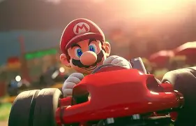
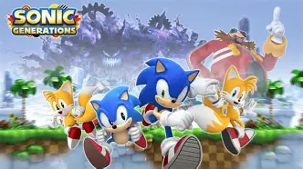

Mario Kart
O rei das pistas e da amizade destruída.
Tempo desde o Lançamento (27 de Agosto de 1992):
História do Arco-Íris
Mario Kart não é apenas um jogo de corrida; é o nascimento de um gênero. Lançado em 1992, o Super Mario Kart original estabeleceu o padrão para jogos de corrida de kart com seus power-ups caóticos e a diversão multiplayer. A versão Arcade GP, desenvolvida em parceria com a Namco, levou a experiência para os fliperamas com cabines interativas e mais itens malucos, mantendo a essência das cores primárias vibrantes e da jogabilidade viciante.
Gameplay Clássica
A jogabilidade central é baseada em terminar em primeiro, usando mecânicas como drifting para boost de velocidade e, crucialmente, o uso de itens caóticos (como o infame casco azul) para atacar os adversários. A dificuldade é progressiva (de Mushroom Cup à Special Cup), oferecendo uma experiência de corrida rápida, imprevisível e altamente recompensadora em caso de vitória de última hora.
Acessar Site Onde JogarMortal Kombat
Teste sua might e execute seu Fatality.
Tempo desde o Lançamento (8 de Outubro de 1992):
A Lenda do Fliperama

Mortal Kombat revolucionou os jogos de luta com seu realismo digitalizado e, claro, a controvérsia dos Fatalities. Lançado em 1992, o jogo se destacou por usar atores digitalizados em vez de sprites desenhados à mão, dando-lhe uma estética sombria e adulta. A jogabilidade inovadora, focada em combos simples e movimentos especiais secretos, garantiu seu lugar como um clássico instantâneo e uma força motriz na criação do sistema de classificação de jogos.
Mostre Sua Força
A movimentação é tradicional, utilizando o direcional para andar para frente, para trás, pular ou agachar. Os ataques são divididos em quatro botões principais: Soco Alto, Soco Baixo, Chute Alto e Chute Baixo. A defesa é crucial e geralmente realizada pressionando um botão de bloqueio específico ou, em versões mais antigas, segurando a direção oposta ao adversário.
Acessar Site Onde JogarElite
Comércio, combate e exploração estelar em 3D.
Tempo desde o Lançamento (Setembro de 1984):
O Pioneiro do Espaço
![[Imagem de combate espacial em wireframe de Elite]](./midia/elite.webp)
Elite, lançado em 1984, é frequentemente citado como um dos jogos mais influentes da história. Ele foi um dos primeiros jogos a oferecer um mundo 3D aberto, construído com gráficos de wireframe. A premissa era simples, mas profunda: comece como um piloto de nave espacial humilde e suba na hierarquia ('Rating') através do comércio, pirataria e exploração. O universo gerado processualmente e a liberdade de escolha do jogador eram revolucionários para a época.
A Fronteira Final
A principal forma de progredir e ganhar dinheiro em Elite é através do comércio intergaláctico. Cada planeta possui um estado de economia e tecnologia diferente, o que afeta o preço de bens como alimentos, máquinas e drogas. O jogador viaja entre sistemas estelares, comprando mercadorias baratas em um planeta (por exemplo, um planeta agrícola) e vendendo-as por um lucro alto em outro (por exemplo, um planeta industrial). Dominar as rotas comerciais lucrativas é essencial para acumular riqueza, melhorar a nave e subir de patente.
Acessar Site Onde Jogar (Versão Moderna)Sonic the Hedgehog
Velocidade pura, anéis dourados e a batalha contra o Dr. Robotnik.
Tempo desde o Lançamento (23 de Junho de 1991):
A Era da Velocidade
Sonic the Hedgehog foi a resposta da SEGA ao Mario e rapidamente se tornou um ícone da cultura pop. Lançado em 1991, o jogo se destacou por seu foco principal na velocidade. O design de fases permitia que os jogadores corressem por loops e rampas a uma velocidade vertiginosa, algo inédito na época. Embora a versão mais conhecida seja a de console, Sonic teve inúmeras adaptações para fliperamas, mantendo a identidade visual forte e a jogabilidade rápida e desafiadora.
Gotta Go Fast!
O sistema de vida em Sonic é único e se baseia nos Anéis Dourados. Enquanto o jogador tiver pelo menos um anel, ele está protegido contra a maioria dos ataques inimigos. Se for atingido, os anéis se espalham, dando ao jogador uma chance de coletar alguns de volta. No entanto, se for atingido sem nenhum anel, ele perde uma vida. Este mecanismo cria uma tensão de risco vs. recompensa, onde acumular anéis permite que o jogador se arrisque mais na velocidade, mas perder todos eles significa um erro fatal.
Acessar Site Onde Jogar